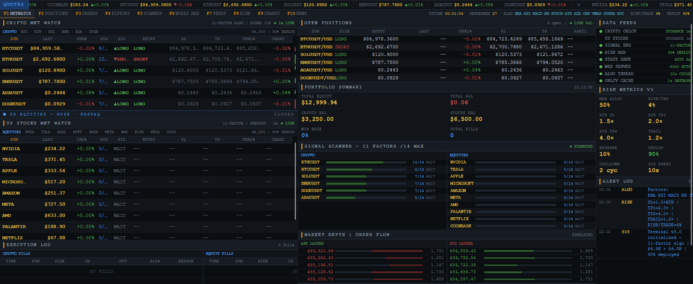
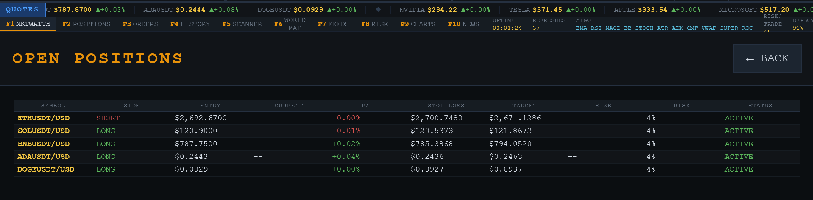
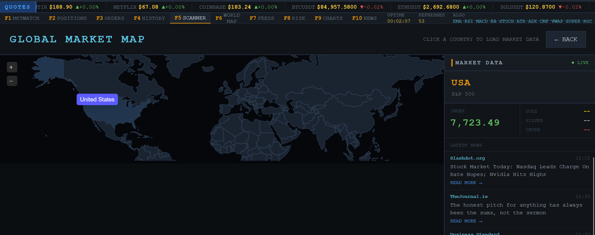

just some things im working on and learning about
interests and stuff i want to build
projects that ive done
stock prediction ai
a market research project im building to study market data and find patterns in it.
im experimenting with things like market regimes and anomaly detection , so essentially it uses indicators as well as market news from around the world at very high frequency to find patterns in the market and predict movement , its a work in progress and im still learning and i wanna make it open source so others can learn too and contribute to it. im also trying to make it run on limited hardware like a raspberry pi or an old laptop so that it can be used by anyone without needing a powerful computer or a cloud server
local ai device
its basically an idea for a small device that can run ai locally on limited hardware like a raspberry pi or an old laptop or perhaps an esp32 or something like that. the idea is to make it small, cheap and power efficient while still being useful.
im mainly interested in making it small, cheap and power efficient but also useful so i was thinking about using it to run a small local ai model for things like basic stock analysis but somehting thats pretty sophisticated and can run on limited hardware this links with the other project i mentioned about stock prediction here
self hosted stuff
i run a small linux server for hosting things and testing projects.
mostly linux, docker and storing movies and shows and my minecraft servers!!
computer architecture
learning more about how computers work underneath the software
like how cpus, gpus and memory work and how they affect performance and efficiency mostly i learn this stuff by myself thru yt videos and reading books
hardware efficiency
looking at how hardware can do more without using a ton of power.
especially performance per watt and how hardware choices affect real workloads and how we can make hardware more effecient like i said before im tryna run a local ai model on an esp32 or a raspberry pi so im trying to learn how to modify the esp32 to make them more effecient (raspberry pi too!) and essentially make them run faster and better
ai and systems
learning about what happens when ai runs on actual hardware instead of just using an api
really interested in local models, limited hardware and the software behind them and ai in general how it works and how we can make it better
smart parking system
a smart parking system using an arduino (later an esp32), two ir sensors and a servo motor. it tracks how many parking slots are full or empty and displays the count on the arduino serial monitor. the plan is to later show it on a webpage hosted by the esp32.
smoke detector
a smoke detector using an mq-2 sensor. first, i used an arduino to show the presence of smoke in a room on the serial monitor. later, i connected it to the internet with an esp32, and eventually added a gsm module to send a text message to my phone.
breadboard console
a breadboard console built with an arduino, a 16x2 alphanumeric lcd (later replaced with a 2-inch oled display), a breadboard and a couple of buttons. i built two games for it, similar to flappy bird and crossy road. i plan to build more simple games that can run on an arduino, like a simple racing game or snake. right now, im working on a home menu where you can select games and settings, and adding sound with a simple piezo buzzer. for the hardware, ive finished designing a custom case and a pcb for it. this project is one of my personal favourites and one that ill probably remember for a long time since i love gaming too. all the resources for my project, like the pcb design, the .stl file and the code, can be accessed here.
simple antivirus
a very simple antivirus that uses hash matching with the virustotal api. it's pretty simple, but cool nevertheless. you can check it out here. it takes a file, calculates its hash and checks whether that hash is in the virustotal database. if it is, the file may be malicious; if it isnt, it hasnt been identified as malicious by that check. its a simple starting point for learning how antivirus software works, and it helped me understand the virustotal api and hash matching for detecting malicious files.
trading terminal
i developed a trading terminal which has a lot of features, including:
-
marketwatch: the default screen where the terminal starts. it monitors crypto coins like btc, sol, ada, doge and eth, tracking current price, algorithm score, signal, entry price, stoploss, takeprofit, unrealized p&l and a mini graph. it also tracks us stocks such as nvda, tsla, appl, msft, amzn, meta, amd, pltr and nflx. this screen also displays open positions, portfolio summary, signal scanner, order flow, account info, scrolling ticker prices and alerts.

-
positions: shows the symbol, side (long/short), entry price, current price, p&l, stoploss, takeprofit, target and size of trades.

- orders: shows a list of executed trades and pending orders. this feature is not fully implemented yet.
- scanner: finds assets with the strongest trading signals, separates crypto and equities, and displays active signals.
-
world map (personal favourite): opens a dedicated interactive world map built with jsvectormap. you can select countries to load market information, including the major stock index and its price, gold price, silver price, crude oil price and, most importantly, recent local news.

- feeds: shows the status of all internal data and services.
- risk: displays the risk profile, including risk per trade, capital deployment, reserve capital, stoploss, takeprofit, trailing stop and position exposure. this section is still being built.
- news: a specialized section for news articles from around the world.
this project uses python and the following libraries: yfinance, websockets, requests, pandas and rich, and also many standard libraries including asyncio, time, msvcrt and so on.
you can access the documentation here.